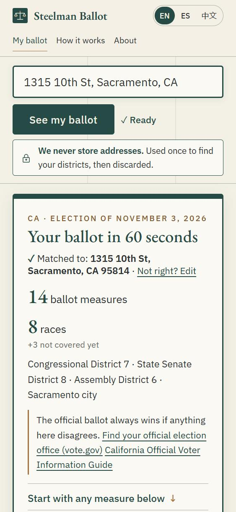

Final project · MGT 409 · Yale SOM · Sophia Lin
Steelman Ballot
Know your ballot in minutes, and hear each side at its best, not its worst.
steelman-ballot.onrender.com · English · Español · 中文
1The problem
"Where do I even begin?"
The idea
A steelman, not a strawman
"Opponents just don't care about election fraud."
"Opponents argue added ID requirements would keep some eligible citizens' mail ballots from counting."
Each side stated so well its own supporters would sign it. Example: California Prop 39, voter ID.
3The app
Address in. Every measure, both sides.

Your ballot Both sides at their best
Both sides at their best What would change
What would changeHow it works · what's new
One AI writes. A second AI tries to break it.
↺ Below 4 out of 5 for either side? Rewrite, up to 3 times.
One real run · California Prop 39
The AI Challenger caught a missing argument
Yes side: missing supporters' point on mail-ballot signature delays
The AI Writer rewrites with the specific fixes
Both sides pass. Published.
5 model calls · $0.25 · 96 seconds, then free for every voter
6Tokenomics
Research once. Serve every voter.
Safety
Trust, privacy and budget, protected
Official sites only. Hidden instructions stripped.
Every claim cited and checked. Unfair cards flagged.
Voters can't trigger AI. Hard caps per card.
10 of 10 safety tests pass · addresses never stored
8Impact
"Democratizing access to information that's unbiased… is something we really need. Steelman Ballot does just that. … I wish I had this for the recent election."
Tester who works in politics
What's next
From 3 states to every ballot
All 50 states, then local measures with election offices
A real-world voter study
Steelman briefings on issues of the day
Think more deeply. Vote more thoughtfully.
10